Structured Data North Star

Background
Workiva is a B2B platform that helps large organizations manage complex reporting and compliance workflows. This work centers on financial reporting, where structured data organizes financial numbers into standardized formats used for SEC filings.
XBRL (eXtensible Business Reporting Language) is a machine-readable format that tags financial data so regulators like the SEC and investors can read and analyze company filings.
My role: UX lead from start to finish
Structured data tools are powerful, but their complexity creates friction, errors and reliance on professional services.
When I joined Workiva, my first mandate was to set a multi-year North Star vision for our XBRL product suite in six months, in a domain defined by dense data and complex regulatory nuance.
How complex? Workiva maintains a 50+ person Professional Services team dedicated to this domain, as most customers opt for our higher-cost services over our DIY option.
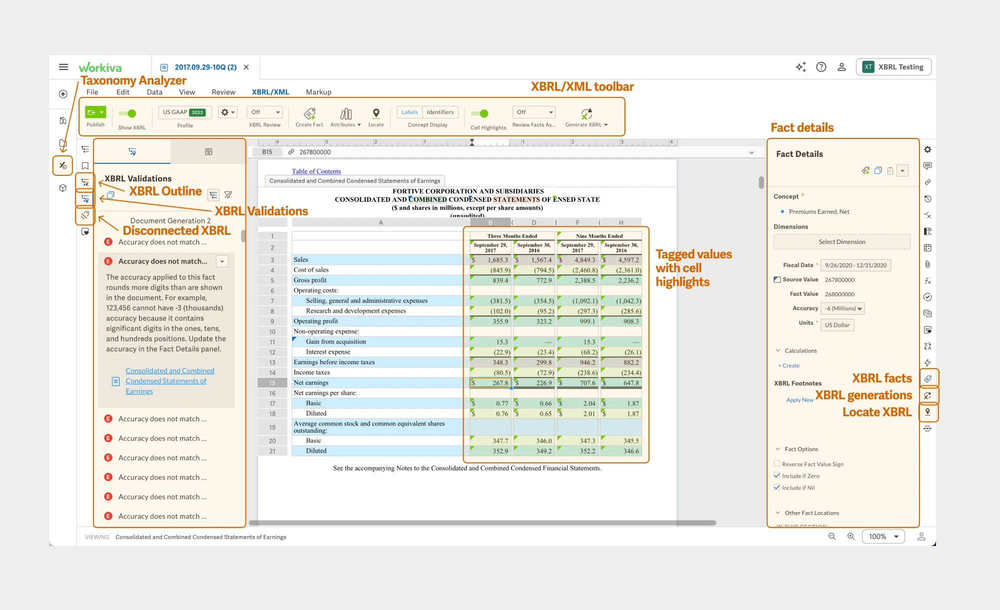
To move fast, I ran workshops with product and domain stakeholders, interviewed our most tenured engineers (12+ years), and sat with our services team to understand pain points. This built trust, relationships and buy-in. This research informed the 3 pillars that I would use to guide my conceptual prototype designs.
3 Pillars of the North Star
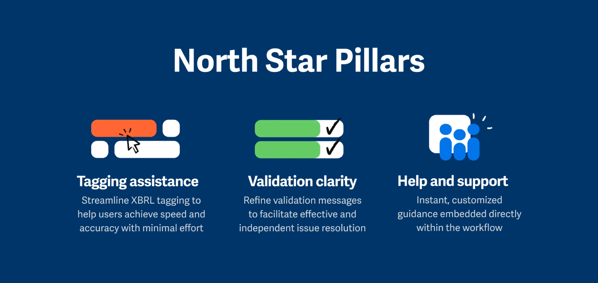
1. Tagging is complex and XBRL expertise is crucial
Customers struggle with XBRL tagging, facing validation errors and repetitive adjustments. The process is time-consuming and frustrating without expert guidance.
Users need more in-platform help to streamline tagging, often turning to external resources due to our platform's complexity. Meeting these needs will enhance their tagging experience.
2. Validation messages are unclear and frustrating
Users want to fix errors themselves before turning to Professional Services. Resolving issues often requires trial and error, consulting colleagues, or searching through support resources. For more complex errors, self-troubleshooting can take hours, impacting productivity.
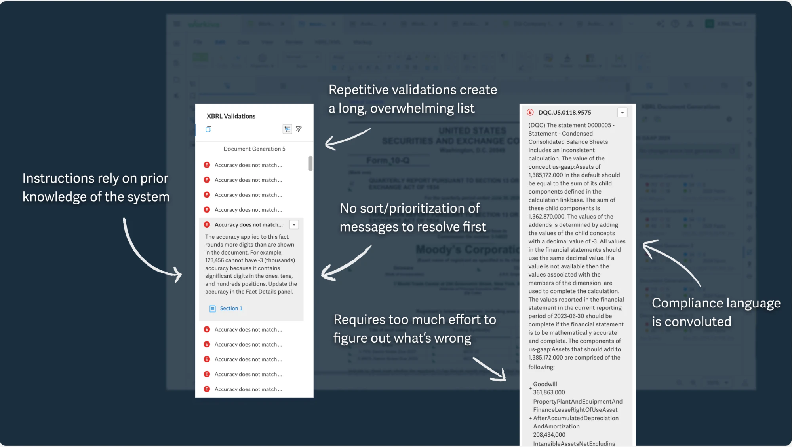
3. Users seek guidance
Users struggle with tagging accurately in a vast taxonomy. They seek automation to reduce effort and boost confidence, and they want to resolve issues independently but get stuck on error messages. More detailed, user-friendly error messages can help with troubleshooting.
It will save a lot of time Googling. Because we only do it once a year, and we always forget how to solve it.
Senior Advisor, Financial Reporting Group, Zalando
Users want a solution that's intuitive and requires minimal XBRL expertise.
I created conceptual prototypes addressing the common pain points between customers and our PS team. After testing with these users I synthesized the feedback and made adjustments to the designs.
- Users want assistance with XBRL tagging and believe AI recommendations will save them time and clicks
- Users preferred smart sorting as a more efficient way to address validations
- Users demand clear visibility into AI-driven changes to cross-reference with their own domain expertise. They want full control to review and revert AI changes, and desire to preserve critical thinking skills
North Star Vision
Highlight untagged values
Scan and highlight untagged values to reduce cognitive load, direct users' attention, and speed up the tagging workflow.
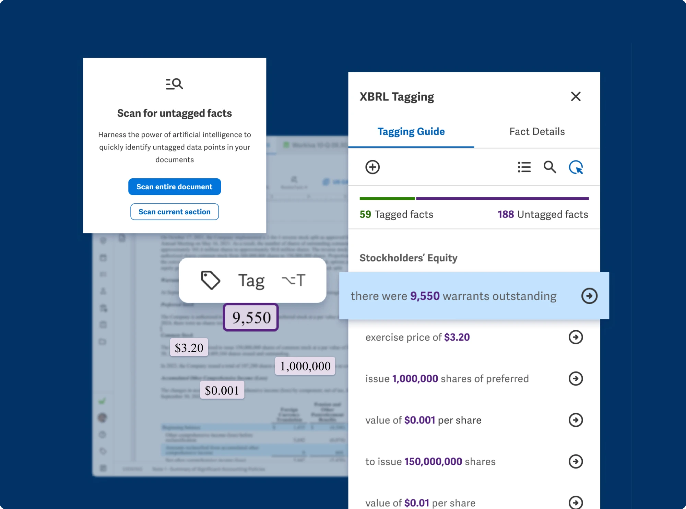
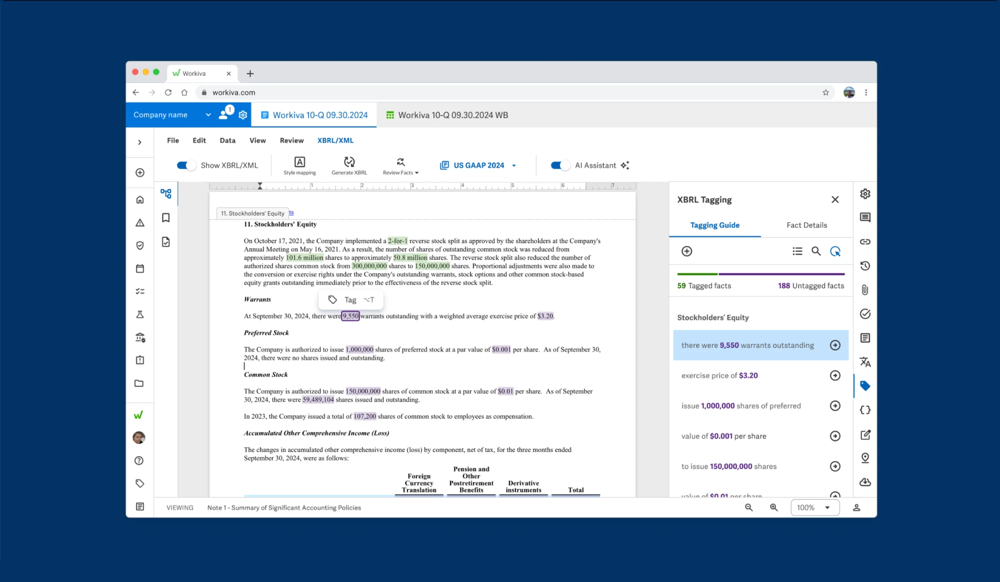
AI-driven recommendations
Leverage AI to help users select accurate tags and understand document context, increasing confidence, reducing validation issues, and improving overall tagging completeness.
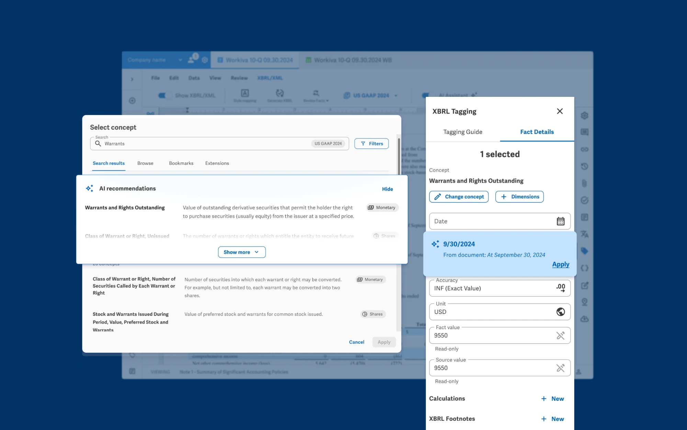
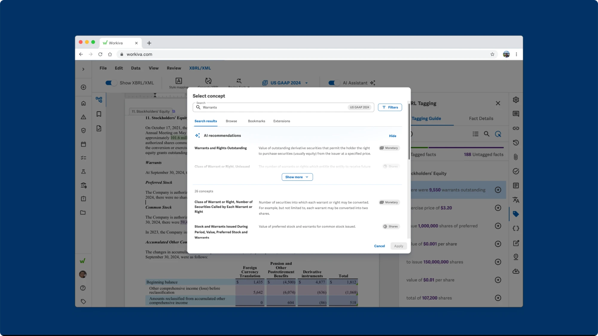
Categorized validation messages
By grouping validation messages into organized categories, users can quickly identify, prioritize, and resolve similar issues, instead of scrolling through repeated messages.
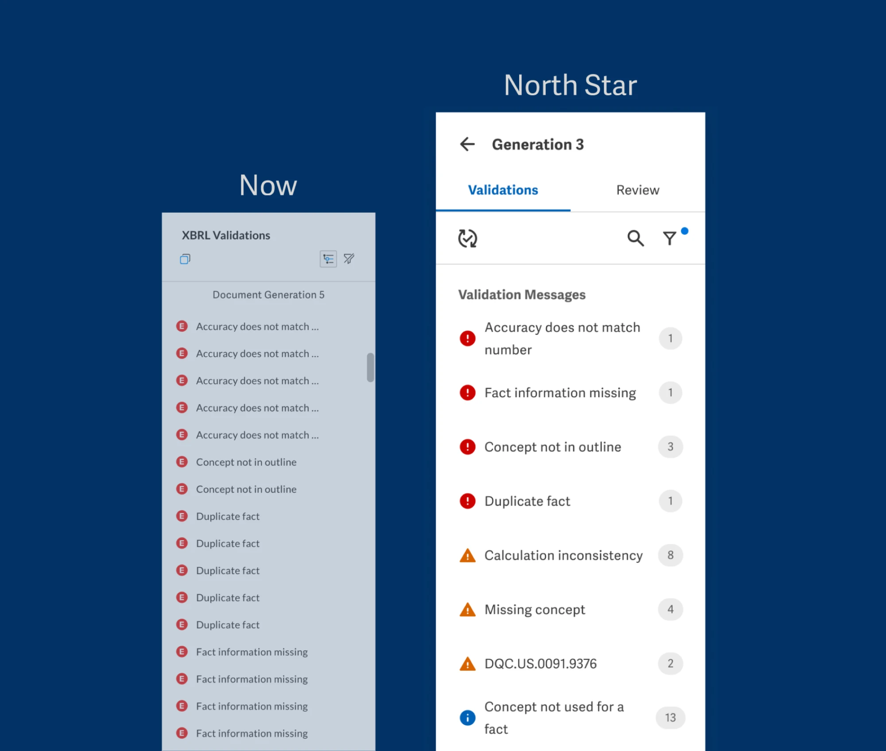
Smart sorting
By sorting and filtering validation messages by priority, users can focus on resolving key errors first and better manage large volumes of errors.
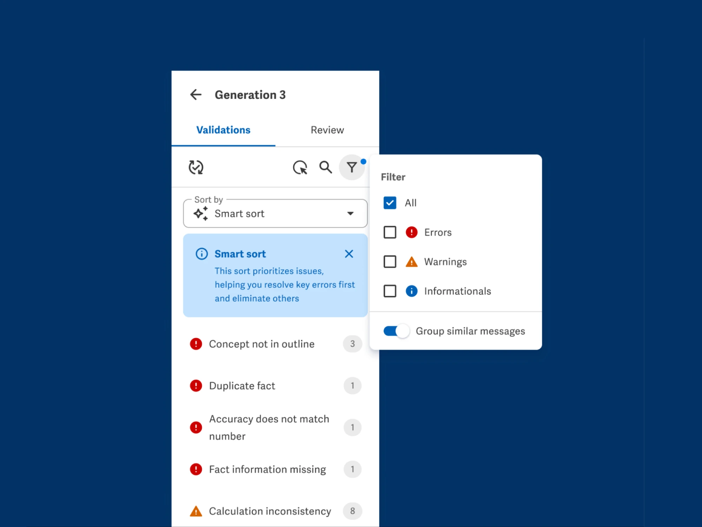
Guided error resolution with human review
Receive step-by-step instructions to resolve validation issues, without searching documentation or waiting for support, while retaining the ability to review changes for accuracy and compliance.
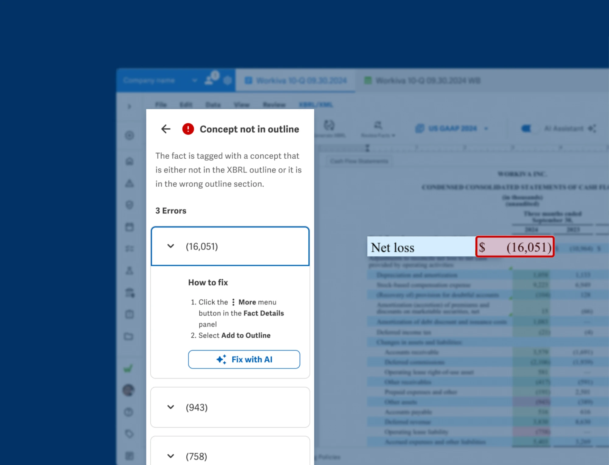
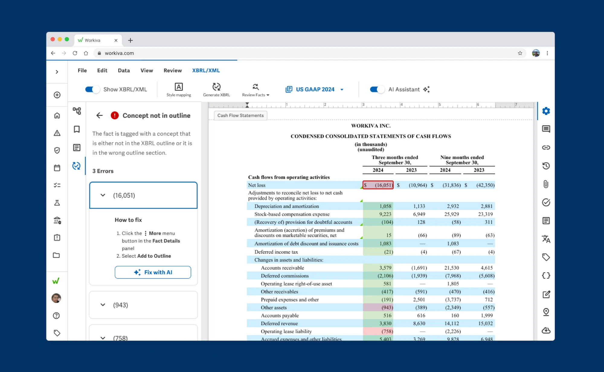
Trust, but verify AI-generated fixes
Let the AI resolve errors, then review changes to ensure accuracy for peace of mind.
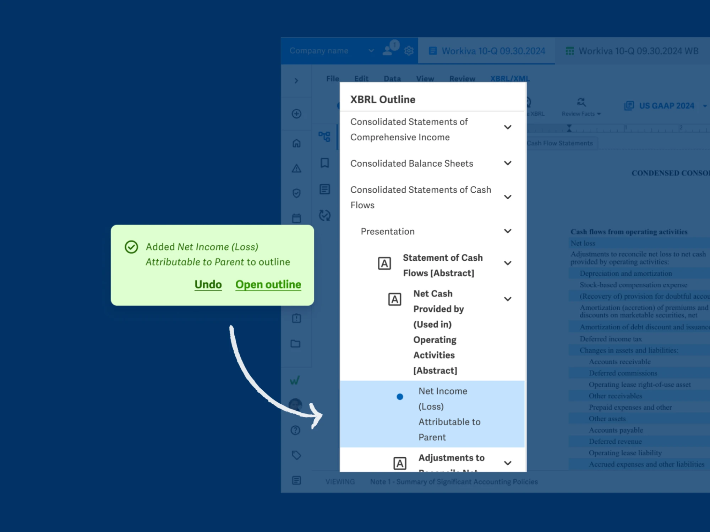
Customers and Professional Services can't wait
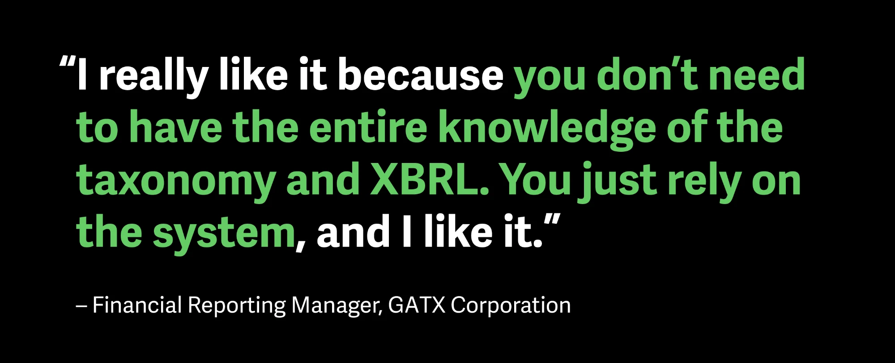
Customers
"I'm positively impressed. I'd love to have this for this closing."
Senior Advisor, Financial Reporting Group, Zalando
"It will greatly improve time spent tagging."
Compliance Accountant, Aflac
Professional Services
"This will definitely reduce the tagging time and review time. I can allocate myself to the quality of the tagging as opposed to getting the tagging done."
Senior Professional Services Manager, Workiva
"We'll have something like a guide who is taking your hand and helping you from the beginning, and you are not asking support."
Professional Services Manager, Workiva
I translated a complex, surface area into validated concepts
By focusing on core user pain points rather than domain minutiae, I translated a high-friction product area into validated concepts, setting a clear multi-year North Star vision in five months and introducing AI features our teams are actively building today.